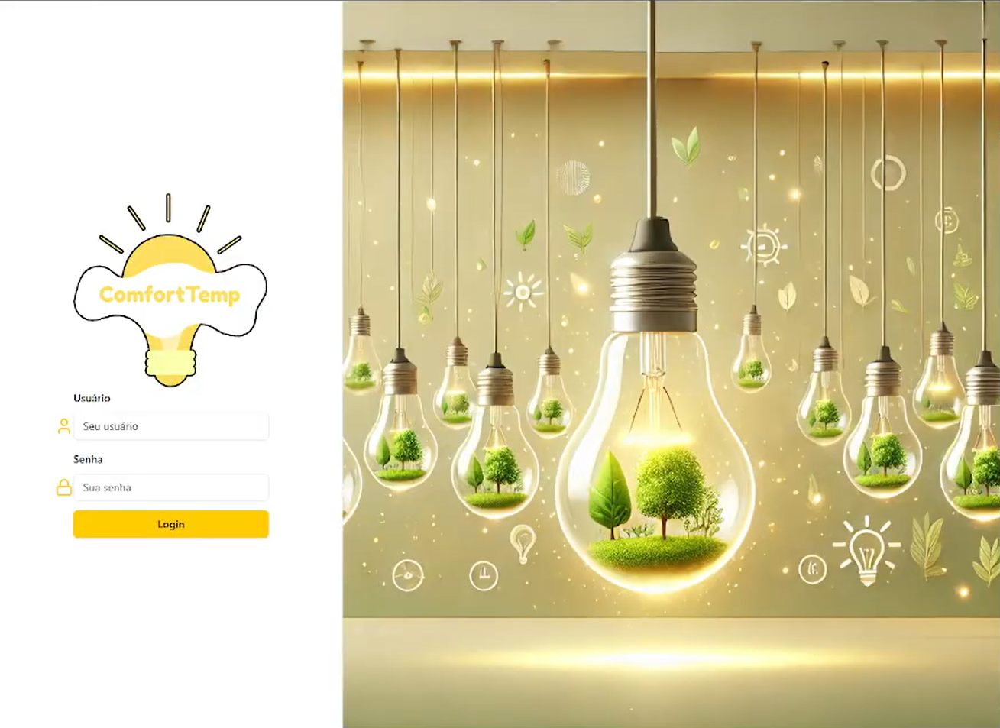
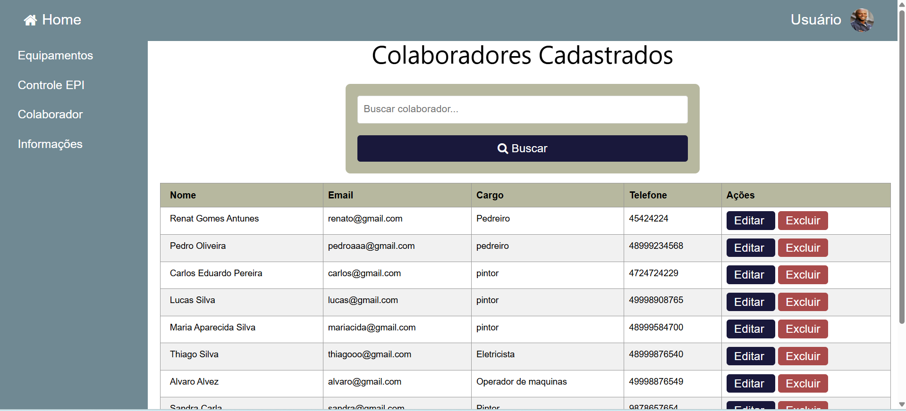
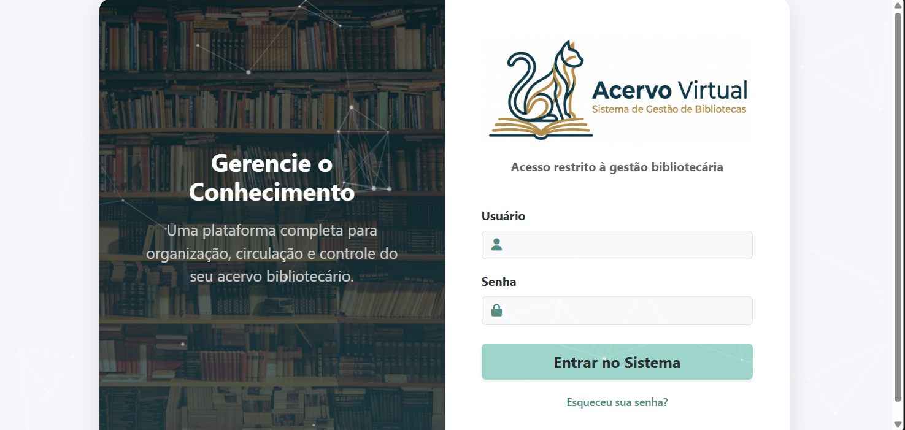
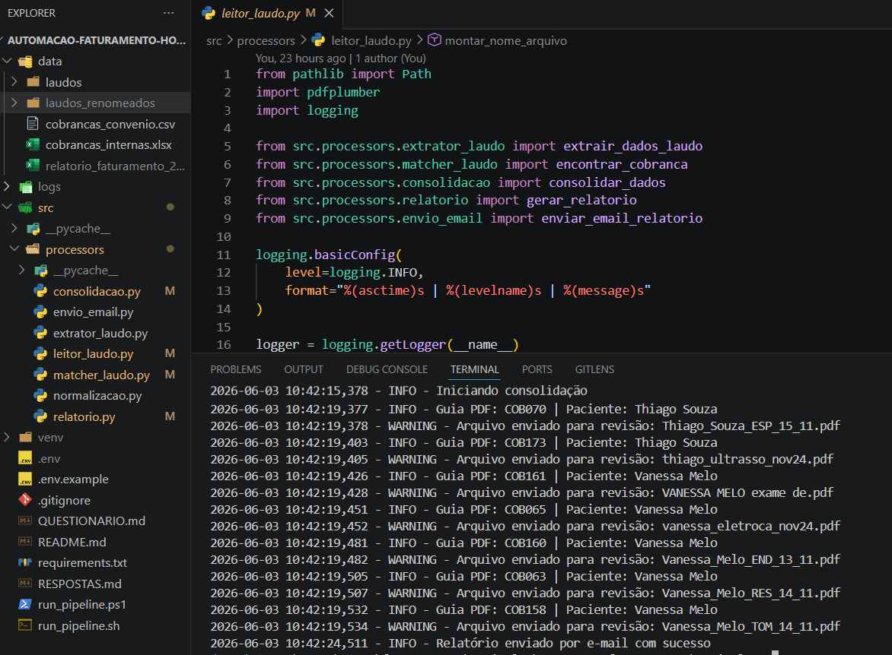

Comecei meus estudos em Análise e Desenvolvimento de Sistemas em um curso técnico, por curiosidade e interesse por tecnologia. Durante meus estudos, acabei me apaixonado pela área de TI o que me levou a ingressar também na graduação. Desde então, me encantei principalmente pelo desenvolvimento Front-End, onde posso unir a criatividade com lógica.
Já participei de projetos utilizando tecnologias diversas, como eletroeletrônica, juntamente com integração entre Front-End e Back-End. Continuo buscando cada vez mais conhecimento para melhorar minhas habilidades e buscar novas oportunidades no mercado de trabalho. Meus principais focos são desenvolvimento web, com atenção especial a interfaces funcionais e bem projetadas.

Projeto colaborativo criado durante a graduação, voltado para o monitoramento e controle de temperatura em ambientes internos, utilizando sensores IoT para demonstração prática do funcionamento e interface intuitiva para controle do usuário. Participei da implementação do código e integração dos sensores com o microcontrolador.
Ver no GitHub Ver no GitHub (Iot)
Site desenvolvido para empréstimos de equipamentos de proteção individual (EPIs), onde é feito o controle dos equipamentos retirados pelos colaboradores. O sistema inclui funcionalidades para registrar, monitorar e organizar os EPIs emprestados. Participei de forma colaborativa da criação do código HTML e CSS.
Ver no GitHub
Projeto colaborativo criado durante a graduação, voltado para o gerenciamento de uma biblioteca, onde é possível fazer o cadastro de livros em estoque, leitores, emprestimos e devoluções, além do controle sobre multas por atraso. Participei da implementação do código utilizando Python e da documentação do projeto.
Ver no GitHub
Pipeline de automação desenvolvido para processar laudos médicos, consolidar informações de diferentes fontes (Excel, CSV e PDFs), validar cobranças, identificar divergências e gerar relatórios automatizados. O projeto também realiza a renomeação inteligente dos arquivos utilizando validações por nome do arquivo, nome do paciente e ID da cobrança, além do envio automático de relatórios por e-mail.
Ver no GitHub